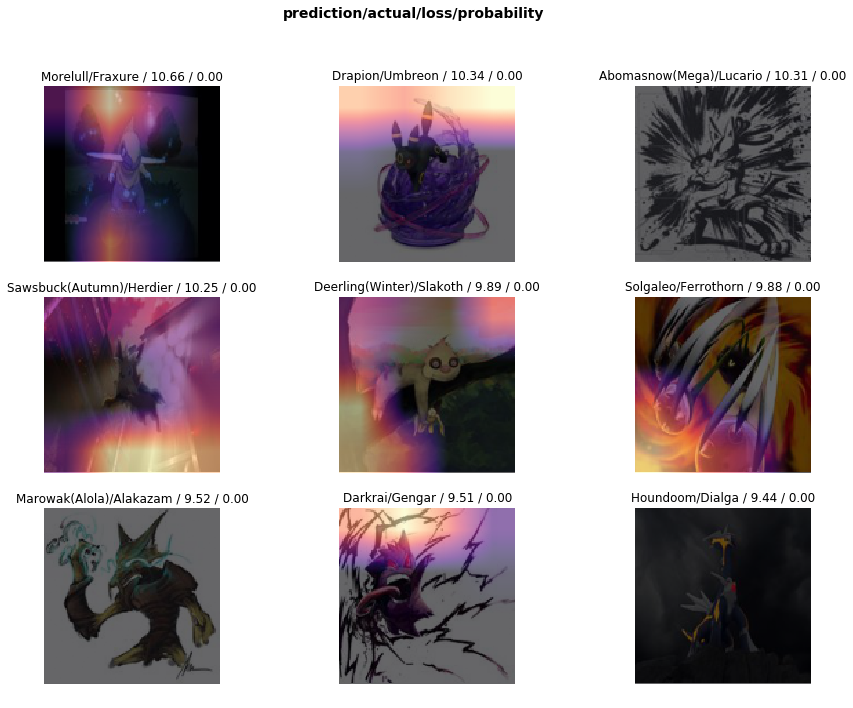
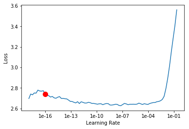

Show code
#hide
from google.colab import files
files.upload()
Here I try to build a pokemon classifier, to understand transfer learning for image classification
In this notebook, I used the pokemon images dataset from here but unfortuantely it is not available now.
#hide
from google.colab import files
files.upload()#hide
# Let's make sure the kaggle.json file is present.
!ls -lha kaggle.json-rw-r--r-- 1 root root 66 Jul 28 09:40 kaggle.json#hide
# Next, install the Kaggle API client.
!pip install -q kaggle#hide
# The Kaggle API client expects this file to be in ~/.kaggle,
# so move it there.
!mkdir -p ~/.kaggle
!cp kaggle.json ~/.kaggle/
# This permissions change avoids a warning on Kaggle tool startup.
!chmod 600 ~/.kaggle/kaggle.json#hide
# using kaggle api
!kaggle datasets download -d mrgravelord/complete-pokemon-image-datasetDownloading complete-pokemon-image-dataset.zip to /content
90% 121M/134M [00:01<00:00, 77.3MB/s]
100% 134M/134M [00:01<00:00, 95.2MB/s]#hide
!unzip /content/complete-pokemon-image-dataset.zip#hide
!rm /content/complete-pokemon-image-dataset.zip#collapse
from fastai.vision import *
from fastai.metrics import error_rate
from fastai.callbacks.tracker import ReduceLROnPlateauCallback, SaveModelCallback
from fastai.callbacks import CSVLogger#collapse
path = Path(".")Form data bunch object from the folders.
data = ImageDataBunch.from_folder(path, train=".",
ds_tfms=get_transforms(),
size=128, bs=64, valid_pct=0.2).normalize(imagenet_stats)Check the number of different pokemon images that we have.
len(data.classes)928Creating a CNN model from architecture of resnet18. I could use a bigger model but I would not be able to serve them from Google or OneDrive because of the size.
1-accuracy.learn = cnn_learner(data, models.resnet18, metrics=error_rate).mixup().to_fp16()Adding callbacks to monitor the training process and - Reduce the learning_rate by using the ReduceLROnPlateauCallback. - Saving the model on every improvement in error_rate - Log the training stats in a csv file.
callbacks_list = [
ReduceLROnPlateauCallback(learn=learn, monitor='error_rate', factor=1e-6, patience=5, min_delta=1e-5),
SaveModelCallback(learn, mode="min", every='improvement', monitor='error_rate', name='best'),
CSVLogger(learn=learn, append=True)
]Now, All the setup has been made, Let’s train the model with default parameters, for 15 epochs.
learn.fit_one_cycle(15, callbacks=callbacks_list)| epoch | train_loss | valid_loss | error_rate | time |
|---|---|---|---|---|
| 0 | 7.173859 | 6.631011 | 0.985798 | 01:09 |
| 1 | 6.246106 | 5.397111 | 0.870562 | 01:08 |
| 2 | 5.001963 | 3.665833 | 0.672144 | 01:07 |
| 3 | 4.327330 | 2.772682 | 0.540881 | 01:06 |
| 4 | 3.941842 | 2.320177 | 0.469669 | 01:06 |
| 5 | 3.648211 | 2.069086 | 0.420978 | 01:06 |
| 6 | 3.423512 | 1.901359 | 0.372895 | 01:06 |
| 7 | 3.328791 | 1.758360 | 0.343883 | 01:06 |
| 8 | 3.140401 | 1.657776 | 0.326841 | 01:06 |
| 9 | 3.044241 | 1.591135 | 0.313857 | 01:07 |
| 10 | 2.940413 | 1.538893 | 0.300670 | 01:06 |
| 11 | 2.759924 | 1.502491 | 0.290931 | 01:07 |
| 12 | 2.781063 | 1.474272 | 0.283628 | 01:06 |
| 13 | 2.761597 | 1.457427 | 0.282816 | 01:06 |
| 14 | 2.700450 | 1.459171 | 0.280179 | 01:07 |
Better model found at epoch 0 with error_rate value: 0.9857983589172363.
Better model found at epoch 1 with error_rate value: 0.870561957359314.
Better model found at epoch 2 with error_rate value: 0.6721444725990295.
Better model found at epoch 3 with error_rate value: 0.5408805012702942.
Better model found at epoch 4 with error_rate value: 0.46966931223869324.
Better model found at epoch 5 with error_rate value: 0.4209778904914856.
Epoch 6: reducing lr to 2.599579409433508e-09
Better model found at epoch 6 with error_rate value: 0.37289512157440186.
Better model found at epoch 7 with error_rate value: 0.34388312697410583.
Better model found at epoch 8 with error_rate value: 0.3268411457538605.
Better model found at epoch 9 with error_rate value: 0.3138567805290222.
Better model found at epoch 10 with error_rate value: 0.30066952109336853.
Better model found at epoch 11 with error_rate value: 0.29093122482299805.
Epoch 12: reducing lr to 2.606527959586539e-10
Better model found at epoch 12 with error_rate value: 0.2836275100708008.
Better model found at epoch 13 with error_rate value: 0.28281599283218384.
Better model found at epoch 14 with error_rate value: 0.2801785469055176.Now that we have got some decent accuracy let us try to save the model and interpret from it.
In the following cell, I - Load the best weights saved by the callbacks during training. - Convert the model back to use 32 bit precision. - Export the model as a whole. - Export the weights alone.
learn.load("best");
learn.to_fp32()
learn.export("pokemon_resnet18_st1.pkl")
learn.save("pokemon_resnet18_st1_wgts")It is very important that we get to know what the model has learnt from the training process. We can do that with the help of ClassificationInterpretation class from the fastai library.
# Create interpretation object
interp = ClassificationInterpretation.from_learner(learn)
# Get the instances where the model has made the most error (by loss value) in the validation set.
losses,idxs = interp.top_losses()
# Check whether the values are all of same length as the validation set
len(data.valid_ds)==len(losses)==len(idxs)TrueInterpret the images where the model made errors during the validation.
The cell below shows - the image. - the model’s prediction of that image. - the actual label of that image. - the loss and probability(the extent to which the model is sure about it’s prediction).
You can notice that the image has some of it’s regions blighted, as far I know these are the regions that the model looked at to make the prediction for the corresponding image.
interp.plot_top_losses(9, figsize=(15,11))
Let us also see which pokemon have confused the model the most.
interp.most_confused(min_val=3)[('Sharpedo(Mega)', 'Sharpedo', 7),
('Moltres', 'Rapidash', 4),
('Thundurus(Incarnate)', 'Thundurus(Therian)', 4),
('Charizard(Mega Y)', 'Charizard', 3),
('Greninja', 'Greninja(Ash)', 3),
('Groudon(Primal)', 'Incineroar', 3),
('Latias(Mega)', 'Latios(Mega)', 3),
('Nidoran(Female)', 'Nidorina', 3)]Apart from the 2nd one in this list, You can see why the model was confused generally, most of it’s confusion stem from the evolved species of the same pokemon.
Let’s try to train the model a little bit differently this time.
learn.load('best');Till now we have been training only the tail region of the model (i.e.) only the last two/ three layers of our model, so essentially this model is almost same as the model which was pretrained on 1000 categories of the ImageNet dataset with some minor tweaks for our problem here. We have some options to improve the model, which are
unfreeze().learn.to_fp16()
learn.unfreeze()Before we start training again, We need to figure out at what speed the neural network should learn, this is controlled by the learning rate parameter and finding a value for is crucial to the training process.
Luckily the fastai’s lr_find method will help us do just the same.
learn.lr_find(start_lr=1e-20)
# Plot the learning rates and the corresponding losses.
learn.recorder.plot(suggestion=True)
# Get the suggested learning rate
min_grad_lr = learn.recorder.min_grad_lrMin numerical gradient: 9.77E-17
Min loss divided by 10: 6.46E-09
Use the same callbacks as before and train for 30 epochs.
learn.fit_one_cycle(30, min_grad_lr, callbacks=callbacks_list)| epoch | train_loss | valid_loss | error_rate | time |
|---|---|---|---|---|
| 0 | 2.648827 | 1.461440 | 0.280179 | 01:08 |
| 1 | 2.687755 | 1.460599 | 0.282004 | 01:08 |
| 2 | 2.646746 | 1.471151 | 0.281802 | 01:07 |
| 3 | 2.647440 | 1.466154 | 0.284033 | 01:07 |
| 4 | 2.687051 | 1.459437 | 0.280179 | 01:07 |
| 5 | 2.656536 | 1.468453 | 0.284236 | 01:07 |
| 6 | 2.646480 | 1.469294 | 0.280787 | 01:08 |
| 7 | 2.707206 | 1.462577 | 0.281802 | 01:08 |
| 8 | 2.650942 | 1.462410 | 0.283222 | 01:07 |
| 9 | 2.657768 | 1.457848 | 0.279976 | 01:07 |
| 10 | 2.689249 | 1.459695 | 0.281193 | 01:07 |
| 11 | 2.656215 | 1.463556 | 0.282613 | 01:07 |
| 12 | 2.715505 | 1.461581 | 0.282410 | 01:09 |
| 13 | 2.689469 | 1.462295 | 0.282410 | 01:08 |
| 14 | 2.685328 | 1.460551 | 0.283222 | 01:08 |
| 15 | 2.624705 | 1.458205 | 0.283222 | 01:10 |
| 16 | 2.675736 | 1.468264 | 0.283628 | 01:11 |
| 17 | 2.641450 | 1.461090 | 0.281193 | 01:10 |
| 18 | 2.662758 | 1.455160 | 0.283425 | 01:12 |
| 19 | 2.662972 | 1.459052 | 0.283019 | 01:13 |
| 20 | 2.711507 | 1.464223 | 0.282207 | 01:13 |
| 21 | 2.697404 | 1.463553 | 0.283425 | 01:13 |
| 22 | 2.643310 | 1.462558 | 0.280584 | 01:12 |
| 23 | 2.657411 | 1.463225 | 0.285048 | 01:12 |
| 24 | 2.679297 | 1.467203 | 0.283425 | 01:13 |
| 25 | 2.654091 | 1.464559 | 0.281599 | 01:12 |
| 26 | 2.619208 | 1.465727 | 0.283222 | 01:12 |
| 27 | 2.622938 | 1.466129 | 0.280990 | 01:12 |
| 28 | 2.646025 | 1.465645 | 0.284236 | 01:13 |
| 29 | 2.679323 | 1.458704 | 0.284033 | 01:13 |
Better model found at epoch 0 with error_rate value: 0.2801785469055176.
Better model found at epoch 9 with error_rate value: 0.27997565269470215.
Epoch 11: reducing lr to 9.288489603500534e-23
Epoch 17: reducing lr to 5.97347999592849e-23
Epoch 29: reducing lr to 3.9089488838232423e-28We can see that the model has improved slightly but not much, other ways that we can try are
fastai has some reasonable defaults).Persist the environment so that we would be able to deploy the model without any problems
!pip freeze > resnet18.txt#hide
learn.csv_logger.read_logged_file()Curious to try out the model?, I have built a small Flask web app which is hosted here. You can find the code for the same in my github repo.
The website may take some time to load since it was hosted on a free tier heroku dyno.
That’s it for this post, Please share it if you have found it useful. Don’t hesitate to leave a comment if you find that any of my explanation needs some clarification.